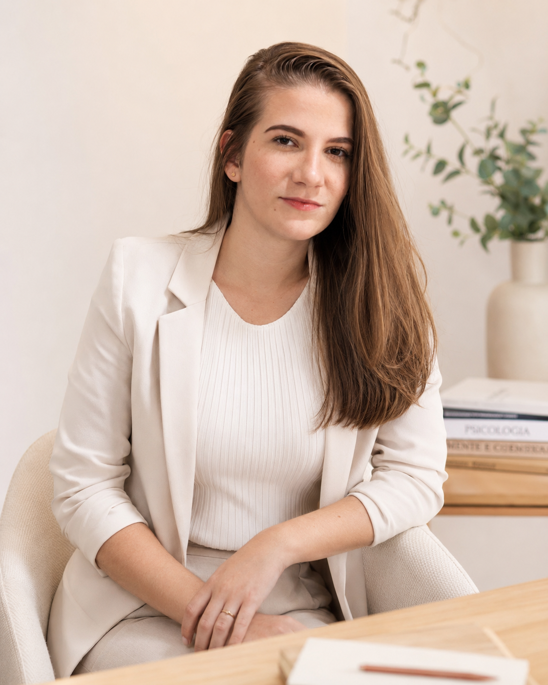
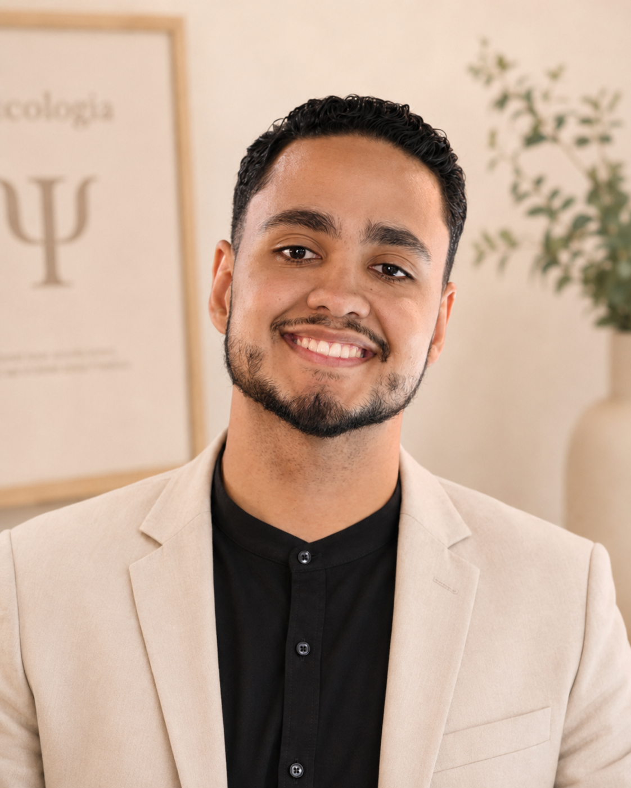

♡
Ansiedade e sobrecarga
Para quem tem se sentido cansado, acelerado, inseguro ou emocionalmente esgotado.
Um espaço seguro para cuidar da saúde emocional, compreender sua história e caminhar com mais clareza, maturidade e propósito.

A terapia é um lugar de escuta, organização interna e construção de novos caminhos.
O Akairos acolhe pessoas em diferentes fases da vida, com demandas emocionais, relacionais, profissionais e existenciais.
Para quem tem se sentido cansado, acelerado, inseguro ou emocionalmente esgotado.
Para quem deseja compreender melhor emoções, padrões, pensamentos e escolhas.
Para quem está passando por mudanças, transições, conflitos internos ou escolhas importantes.
O Espaço Akairos nasceu para oferecer cuidado psicológico sério, ético e acolhedor para pessoas que desejam cuidar da mente, das emoções e da própria história.
Nosso trabalho une conhecimento científico, responsabilidade profissional e sensibilidade para acolher histórias reais, dores reais e processos que precisam ser conduzidos com segurança.
Um processo simples, seguro e individualizado para você iniciar seu acompanhamento com clareza.
Você entra em contato pelo WhatsApp e compartilha brevemente o que está buscando.
Nossa equipe entende sua demanda inicial e indica o profissional mais adequado.
Alinhamos horários disponíveis, modalidade de atendimento e informações iniciais.
O psicólogo escuta sua história, compreende sua demanda e inicia o caminho terapêutico.
Profissionais com diferentes abordagens clínicas, unidos pelo compromisso com um cuidado humano, técnico e responsável.
Base em Terapia Cognitivo-Comportamental, terapias contextuais, neuropsicoterapia e formação em Terapia da Plenitude.
Agendar com Gisele →Atua com ansiedade, autoconhecimento, equilíbrio emocional e orientação de carreira, com base na Gestalt-terapia.
Agendar com Carolaine →
Psicólogo de abordagem psicanalítica, com escuta voltada para compreender conflitos, repetições e questões profundas.
Agendar com Celiano →Atende ansiedade, depressão, burnout e autoconhecimento com base em TCC, ACT e Terapia dos Esquemas.
Agendar com Sâmala →Cada profissional possui uma formação e abordagem específica. Isso permite que cada pessoa seja acompanhada de acordo com sua necessidade, história e momento de vida.
O processo terapêutico não se resume ao alívio de sintomas. Ele também pode ser um caminho de autoconhecimento, reorganização emocional, amadurecimento e reconexão com valores importantes da vida.
Falar com a equipeAlgumas respostas rápidas para ajudar você a dar o primeiro passo com mais segurança.
Nosso atendimento é 100% online.
Você pode falar com nossa equipe pelo WhatsApp. A partir da sua demanda inicial, ajudamos a indicar o profissional mais adequado para seu momento.
Sim. A primeira sessão é um momento de escuta, compreensão da sua história e início do processo terapêutico.
Não necessariamente. O Akairos tem uma identidade cristã e acolhe especialmente pessoas que valorizam essa visão, mas o atendimento psicológico é realizado com ética, respeito e responsabilidade profissional.
Não. Cada processo terapêutico é único. O acompanhamento psicológico não trabalha com promessa de resultado, mas com cuidado, escuta, construção e responsabilidade ao longo do processo.
Basta clicar no botão de WhatsApp, falar com nossa equipe e verificar os horários disponíveis.
No Espaço Akairos, você encontra um lugar seguro para falar, elaborar, compreender e crescer com acompanhamento profissional.
Agendar pelo WhatsApp